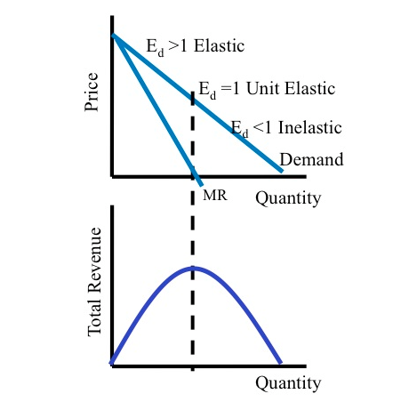

I recently read a sports economics paper by Anthony Krautmann from DePaul University and David Berri from Southern Utah University, in which they aim to show that it is theoretically plausible for profit-maximizing team owners to price tickets in the inelastic portion of the linear demand curve. Simply put, these economists argue that the teams’ approach is to explore the complementarity between revenues associated with attendance and those from selling concessions.
Okay, the arguments seemed plausible, but I needed put on my thinking hat and review what I had learned in my Microeconomic theory class (that was almost two years ago). What does it mean when producers (sports teams in this case) choose to price their goods (seats to the sporting events) in the inelastic region of the demand curve? I figured that a diagram will perhaps stimulate my hippo-campus, thereby activating my memory recognition skills.

Under the monopoly model, the linear demand curve has an elastic and inelastic portion. In the elastic portion, a reduction in prices will increase total revenue; conversely, in the inelastic portion of the demand curve, total revenue will fall as prices decrease. Total revenue is maximized at unit elasticity, which occurs where marginal revenue is zero (examine the graph above and see that MR hits the x-axis at the peak of the TR curve). Due to this property of the demand curve, we would expect marginal cost to be positive and that a monopolist would choose to produce where \(MR = MC\). Therefore, we can conclude that a monopolist would only produce in the elastic region of the demand curve.
So how come teams regularly price their tickets in the inelastic range of the demand curve? Does this real-world observation reject what has been taught in virtually every Microeconomic theory class in the country? After all, are teams not profit maximizers? The authors argue that the answer is perhaps not as straight forward. Moreover, these men argue that inelastic pricing may be explained by realizing that tickets are not the only source of revenue to the teams. If complementary sources of revenue— such as concessions— are able to more than compensate for the reduction in gate revenues associated with inelastic pricing, then such pricing behavior may be optimal nonetheless.
Is that really the case? I had to convince myself of the validity of their arguments. To justify them, I resorted to the only thing that could possibly provide me with some clarity— equations. Like my old high school math teacher would always say: “When in doubt, derive the equations.” (I hope you are enjoying retirement, Wayne! Well deserved!) So here is my attempt. To be consistent with the model specification in the paper, I also made the assumption demand is linear.
Demand
\[\begin{align*} Q=a-bP \end{align*}\]
Inverse Demand
\[\begin{align*} P=\frac{Q-a}{-b} \end{align*}\]
Total Revenue (Ticket)
\[\begin{align*} TR&=P\cdot Q \\ &=(\frac{Q-a}{-b})Q \\ &=\frac{Q^2-aQ}{-b} \\ &=\frac{Q^2}{-b}-\frac{aQ}{-b} \\ &=\frac{Q^2}{-b}+\frac{aQ}{b} \\ &=\frac{a}{b}Q-\frac{1}{b}Q^2 \end{align*}\]
Marginal Revenue (Ticket)
\[\begin{align*} \frac{d}{dQ}TR&=\frac{a}{b}Q-\frac{1}{b}Q^2 \\ &=\frac{a}{b}-\frac{2}{b}Q \end{align*}\]
Profit Maximizing Condition (MR = MC)
\[\begin{align*} MR^T&=MC \\ \frac{a}{b}-\frac{2}{b}Q&=c \\ \end{align*}\]
Therefore:
\[\begin{align*} -\frac{2}{b}Q^*_{nc}&=c-\frac{a}{b} \\ Q^*_{nc}&=-\frac{b}{2}(c-\frac{a}{b}) \\ Q^*_{nc}&=-\frac{bc}{2}+\frac{a}{2} \\ Q^*&_{nc}=\frac{a}{2}-\frac{bc}{2} \end{align*}\]
And:
\[\begin{align*} P^*_{nc}&=\frac{Q^*_{nc}-a}{-b} \\ P^*_{nc}&=\frac{(\frac{a}{2}-\frac{bc}{2})-a}{-b} \\ P^*_{nc}&=\frac{1}{-b}[(\frac{a-bc}{2})-a] \\ P^*_{nc}&=\frac{1}{-b}[(\frac{a-bc}{2})-\frac{2a}{2}] \\ P^*_{nc}&=\frac{1}{-b}[\frac{a-bc-2a}{2}] \\ P^*_{nc}&=\frac{1}{-b}[\frac{-a-bc}{2}] \\ P^*_{nc}&=\frac{-a-bc}{-2b} \\ P^*_{nc}&=\frac{-a}{-2b}-\frac{bc}{-2b} \\ P^*_{nc}&=\frac{a}{2b}+\frac{c}{2} \\ \end{align*}\]
Profit Maximizing \(P^*\) and \(Q^*\) without consideration of concession revenues
\[\begin{align*} P^*_{nc}&=\frac{a}{2b}+\frac{c}{2} \\ Q^*_{nc}&=\frac{a}{2}-\frac{bc}{2} \end{align*}\]
Where \(P^*_{nc}\) and \(Q^*_{nc}\) are the profit-maximizing price and quantity with no concessions consideration.
With consideration of concession revenues, the model must be different. Let \(c\) be marginal cost (MC) of admitting another fan into the stadium and \(g\) be the marginal revenues from concessions:
\[\begin{align*} MR^T&=(c-g) \\ \frac{a}{b}-\frac{2}{b}Q&=(c-g) \\ \end{align*}\]
Therefore:
\[\begin{align*} -\frac{2}{b}Q^*_{c}&=c-g-\frac{a}{b} \\ Q^*_{c}&=-\frac{b}{2}[c-g-\frac{a}{b}] \\ Q^*_{c}&=-\frac{bc}{2}+\frac{bg}{2}+\frac{a}{2} \\ Q^*_{c}&=[\frac{a}{2} -\frac{bc}{2}]+\frac{bg}{2} \\ Q^*_{c}&=Q^*_{nc}+\frac{bg}{2} \\ \end{align*}\]
And:
\[\begin{align*} P^*_{c}&=\frac{Q^*_{c}-a}{-b} \\ P^*_{c}&=\frac{(\frac{a-bc}{2}+\frac{bg}{2})-a}{-b} \\ P^*_{c}&=\frac{1}{-b}[\frac{a-bc}{2}+\frac{bg}{2}-a] \\ P^*_{c}&=\frac{1}{-b}[\frac{a-bc}{2}+\frac{bg}{2}-\frac{2a}{2}] \\ P^*_{c}&=\frac{1}{-b}[\frac{a-bc+bg-2a}{2}] \\ P^*_{c}&=\frac{1}{-b}[\frac{-a-bc+bg}{2}] \\ P^*_{c}&=\frac{-a-bc+bg}{-2b} \\ P^*_{c}&=\frac{-a}{-2b}-\frac{bc}{-2b}+\frac{bg}{-2b} \\ P^*_{c}&=\frac{a}{2b}+\frac{c}{2}-\frac{g}{2} \\ P^*_{c}&=[\frac{a}{2b}+\frac{c}{2}]-\frac{g}{2} \\ P^*_{c}&=P^*_{nc}-\frac{g}{2} \end{align*}\]
Profit Maximizing \(P^*\) and \(Q^*\) with consideration of concession revenues
\[\begin{align*} P^*_{c}&=P^*_{nc}-\frac{g}{2} \\ Q^*_{c}&=Q^*_{nc}+\frac{bg}{2} \end{align*}\]
Where \(P^*_{c}\) and \(Q^*_{c}\) are the profit-maximizing price and quantity with consideration of concession revenues.
Together, the equations above imply that teams would sell more tickets (\(Q^*_{c} > Q^*_{nc}\)) and charge a lower price (\(P^*_{c} < P^*_{nc}\)) than would be the case if the team did not have concession revenues.
So what did I prove here? Well, I was able to convince myself numerically that the authors’ argument that complementary revenues from concessions may recoup the lost revenues resulting from inelastic pricing is legitimate. Ultimately, this helps explain the observation that estimated elasticities in sports economics literature are often negative, which implies that teams are pricing on the inelastic portion of the demand curve. The reasoning behind this is that teams lower their prices into the inelastic portion of demand to increase their non-ticket revenues. The advantage of this explanation is that it is consistent with the theory that owners are, in the end, profit maximizers.
Voila! Mission accomplished!
I will now try to recoup some of the Saturday sleep-in I just lost.